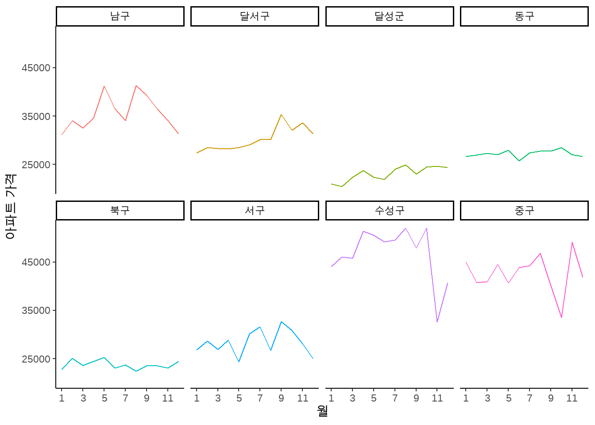

install.packages("rater", "maptools", "rgeos")14 심화: 공간정보를 이용한 분석
이 교재에서 마지막으로 다룰 주제는 공간정보를 이용한 시각화 보도 입니다. 공간 정보는 사실 대단히 어려운 주제입니다. 우리가 일반적으로 처리하는 정보가 시간 뿐 아니라 공간이라는 다른 좌표 위에도 표현되어야 하기 때문인데요, 이러한 복잡성 때문에 공간데이터는 테이블, 데이터프레임과 같이 편리한 2차원 형태의 데이터로 표현 할 수 없는 경우가 많습니다. 그러나, 주택 가격, 기후 변화, 대기 오염, 범죄율 등 최근 많은 주목을 받는 여러 뉴스 주제들은 공간이라는 차원을 회피한 채 다루기 어려운 경우가 많습니다.
공간 데이터 분석을 자세하게 다루자면 책 한권의 분량으로도 턱도 없이 부족하겠지만, 여기서는 한국 공공공데이터 포털 API를 이용해 쉽게 얻을 수 있는 공간 데이터를 이용해 비교적 단순한 시각화를 연습해 봄으로써 기초적인 개념을 익히는데 머물도록 하겠습니다.
먼저, 다음 패키지들을 인스톨해 주시기 바랍니다.
library(tidyverse)
library(httr)
library(jsonlite)
library(raster)
library(extrafont)
#font_import()
#Sys.getlocale()
#Sys.setlocale("LC_ALL","C") # 강제 언어 삭제
Sys.setlocale("LC_ALL","Korean") # 언어 다시 한글로[1] "LC_COLLATE=Korean_Korea.949;LC_CTYPE=Korean_Korea.949;LC_MONETARY=Korean_Korea.949;LC_NUMERIC=C;LC_TIME=Korean_Korea.949"14.1 아파트 실거래가 데이터 얻기
여기서 사용할 데이터는 공공데이터 포털에서 얻을 수 있는 국토교통부 아파트매매 실거래 상세 자료 입니다. API키를 획득하는 방법등은 앞에서 이미 다루었으므로, 해당 부분을 참조하길 바랍니다. 먼저, 데이터를 얻는 가장 기초적인 방법을 반복해 보겠습니다.
res <- GET(url="http://openapi.molit.go.kr:8081/OpenAPI_ToolInstallPackage/service/rest/RTMSOBJSvc/getRTMSDataSvcAptTrade",
query=list(LAWD_CD=11110,
DEAL_YMD=201512,
serviceKey="LGvIXqsO1eCAKjgMBQWd5QYDOJ77cd4Tq/ea2CQUTUuisLvxlxaGm0YTp4f+89FfhplvwiQIe0cngpybTkdDHQ=="))
dtJSON <- httr::content(res, as = "text", encoding="UTF-8")
data <- fromJSON(dtJSON)
df <- data$response$body$items$item
#df처리 결과에서 볼 수 있는 것처럼 해당 데이터는 2015년 12월(DEAL_YMD=201512) 서울 종로구에서 이루어진(LAWD_CD=11110) 아파트 매매 자료를 포함하고 있습니다. 대단히 흥미로운 자료이지만, 결정적인 문제가 있습니다. 해당 데이터는 종로구라는 한정된 공간에 대한 데이터를 2015년12월이라는 아주 짧은 기간에 관해서만 제공하고 있다는 것이 바로 그점입니다.
따라서, 다수의 연월과 공간에 대해 위의 작업을 반복해 줄 필요가 있습니다. 이를 위해서는 (1) 위의 작업 전체를 하나의 함수로 만든 다음, (2) 해당 함수를 여러개의 연월과 공간에 대해 반복해 주면 됩니다.
14.2 함수 만들기
먼저 함수를 만들도록 합시다. R에서 사용자가 직접 함수를 만들기 위한 문법은 다음과 같습니다.
함수이름 <- function(인수){
함수내용
}- 함수이름: 원하는대로 함수의 이름을 만들어 줍니다. 물론, 해당 함수 이름은 함수가 실제로 행하는 작업의 내용을 반영해서 써 주는 것이 후에 함수를 기억하고 재사용하는데 유리합니다.
- 인수: 사용자가 만들 함수의 투입물(input)의 이름을 적어줍니다. 우리는 앞으로 만들 함수가 다수의 연월과, 지역을 투입물(input)로 받아들이고, API로부터 해당 연월과 지역의 아파트 거래기업을 받아오는 작업을 하기를 원하니 인수는 아파트 연월과 지역 코드가 되어야 할 것입니다.
- 함수내용: 함수가 실제로 어떠한 동작을 하는지를 써 주면 됩니다. 결국 위에서 사용한 코드를 그대로 사용하되,
11110,201512부분만 특정값으로 고정되는 것이 아니라 계속해서 변화될 수 있도록 인수 형태로 적어주면 됩니다.
다음의 함수 정의를 보세요.
getApt <- function(cd, ymd){
res <- GET(url="http://openapi.molit.go.kr:8081/OpenAPI_ToolInstallPackage/service/rest/RTMSOBJSvc/getRTMSDataSvcAptTrade",
query=list(LAWD_CD=cd,
DEAL_YMD=ymd,
serviceKey="LGvIXqsO1eCAKjgMBQWd5QYDOJ77cd4Tq/ea2CQUTUuisLvxlxaGm0YTp4f+89FfhplvwiQIe0cngpybTkdDHQ=="))
dtJSON <- httr::content(res, as = "text", encoding="UTF-8")
data <- fromJSON(dtJSON)
df <- data$response$body$items$item
return(df)
}여기서 getApt가 함수이름, cd, ymd가 인수에 해당합니다. 함수내용은 우리가 처음 다룬 코드와 동일하지만, 11110과 201512 부분만 인수인 cd, ymd로 대체되었습니다. 이제 꼭 “종로구”, “2015년 12월”에 관한 데이터 뿐만 아니라 cd, ymd에 어떤 값을 집어넣느냐에 따라 여러 지역과 기간에 관한 데이터를 얻을 수 있게 됩니다. 다음과 같이 말이죠.
getApt(cd=11110, ymd=201512)위의 API에서 사용하고 있는 지역코드는 ’행정표준관리시스템’을 따르는 것으로, 지역코드는 해당 웹사이트에서 확인 및 검색할 수 있습니다.
14.3 아파트 실거래가 (반복)
이제 위의 함수를 여러 지역과 연도에 따라 반복해 줍니다. R에서 가장 간단하게 함수를 반복해 주는 문법은 다음과 같습니다.
for (컨테이너 in 벡터) {
컨테이너에 담겨있는 벡터의 요소를 이용해 반복할 작업 내용
}- 벡터: 반복을 수행할 요소들을 묶어둔 벡터를 의미합니다. 예컨대 지역코드 벡터
c(11110, 11111)라면 11110에 해당하는 지역과 11111에 해당하는 지역에 대한 같은 작업을 반복하겠다는 뜻입니다. - 컨테이너: 컨테이너는 반복할 벡터의 요소를 한 번에 하나씩 담을 상자라고 생각하면 되겠습니다. 반복할 벡터가
c(11110, 11111)이고 컨테이너의 이름이cd라면 첫번째 반복에서는cd는 11110을 의미하고, 두번째 반복에서cd는 11111을 의미하는 식입니다. - 작업 내용: 컨테이너에 들어있는 값을 가지고 어떤 작업을 차례차례 반복할 것인지를 여기에 서 주면 되겠습니다.
먼저 반복할 벡터들을 만들어주겠습니다.
cds <- c(27260, 27140, 27290, 27110, 27170, 27200, 27230, 27710)
ymds <- 202101:202112cds에 들어있는 숫자는 각각 대구광역시 수성구, 동구, 달서구, 중구, 서구, 남구, 북구, 달성군에 해당하는 지역 코드 입니다. 그리고 ymds에 해당하는 202101:202112은 202101부터 202112까지 12개의 정수, 즉, 2021년 1월부터 12월까지를 의미합니다.
이제 두 개의 벡터에 대해 반복을 해야 합니다. 앞에서는 하나의 벡터에 대해서만 반복을 했는데, 두 개에 대해서는 어떻게 반복을 해야 할까요? 방법은 간단합니다. 반복문 안에 반복문이 있으면 됩니다. 다음과 같이 말이죠.
datalist <- list() # 데이터를 차례차례 입력할 빈 리스트 생성
counter <- 1 # 리스트 안의 위치를 지정해주기 위한 카운터
for (cd in cds){
for (ymd in ymds) {
#dt <- getApt(cd=cd, ymd=ymd)
#print(dt)
datalist[[counter]] <- getApt(cd=cd, ymd=ymd)
counter <- counter + 1
}
}datalist:list()명령으로 만들어진 빈 리스트 입니다. 한 번 반복할 때마다 API로부터 하나의 테이블이 들어오므로, 이 테이블들을 하나하나 빈 리스트에 넣어두는 것입니다.counter는 빈 리스트였던datalist의 어느 자리에 새로운 리스트를 넣어줄 지를 정해주는 역할을 합니다.counter <- counter + 1이라고 되어 있으니, 반복이 한 번 이루어질 때마다 counter는 1에서 2, 3, 4, … 이렇게 더 큰 숫자를 가지게 됩니다. 따라서, 테이블에 새로 하나 전송될 때마다datalist[[counte]] <-에 따라datalist의 첫번째 자리, 두번째 자리, 세번째 자리에, 차곡차고 쌓이게 되는 것이지요. 반복이 끝나고 나면datalist는 12개월*8개지역=96개 테이블을 가지고 있는 리스트가 됩니다.
이제 ’테이블들의 리스트’인 datalist에 들어있는 모든 테이블을 하나의 테이블로 합쳐줍니다.
dtApt <- bind_rows(datalist)이제 우리는 dtApt라는 상당히 큰 테이블을 가지게 되었습니다.
#write_csv(dtApt, "dtApt.csv")dtApt <- read_csv("dtApt.csv")Rows: 18970 Columns: 16
-- Column specification --------------------------------------------------------
Delimiter: ","
chr (7): 거래유형, 법정동, 아파트, 중개사소재지, 지번, 해제사유발생일, 해제여부
dbl (7): 건축년도, 년, 월, 일, 전용면적, 지역코드, 층
num (1): 거래금액
lgl (1): 등기일자
i Use `spec()` to retrieve the full column specification for this data.
i Specify the column types or set `show_col_types = FALSE` to quiet this message.14.4 아파트 실거래가 (시각화)
이제 주어진 데이터를 이용해 시각화를 시작해 보겠습니다. 당장의 목표는 각 연도별, 지역별 평균 매매 가격을 시각화하는 것입니다.
aggApt <- dtApt %>%
mutate(거래금액 = as.numeric(gsub(",", "", 거래금액)),
#yearmonth = 년*100 + 월,
district = case_when(지역코드 == 27260 ~ "수성구",
지역코드 == 27140 ~ "동구",
지역코드 == 27290 ~ "달서구",
지역코드 == 27110 ~ "중구",
지역코드 == 27170 ~ "서구",
지역코드 == 27200 ~ "남구",
지역코드 == 27230 ~ "북구",
지역코드 == 27710 ~ "달성군")) %>%
group_by(district, 월) %>%
summarise(avgP = mean(거래금액)) `summarise()` has grouped output by 'district'. You can override using the
`.groups` argument.거래금액을 재정의 한 부분에 주목하세요. 이 부분은 금액을 표현하는 숫자 표시에 쉽표(,)가 있어 R이 금액을 숫자가 아닌 문자처럼 인식하는 문제를 해결해 주는 코드 입니다. 즉, gsub() 함수를 이용해 쉼표를 제거해 준 다음, as.numeric() 함수를 이용해 문자를 숫자로 다시 인식시켜 줍니다. 그 외에는 이전 챕터에서 이미 연습한 바 있는 코드입니다.
이제 시간에 따른 평균 매매 가격 변화를 지역별로 시각화해 보겠습니다.
aggApt %>%
ggplot(aes(월, avgP, color=district)) +
geom_line() +
facet_wrap(~ district, nrow = 2) +
theme_classic()이를 조금 더 보기좋게 수정한 코드는 다음과 같습니다.
aggApt %>%
ggplot(aes(as.integer(월), avgP, color=district)) +
geom_line() +
facet_wrap(~ district, nrow = 2) +
theme_classic() +
ylab("아파트 가격") +
xlab("월") +
scale_x_continuous(breaks=seq(1,12,by=2)) +
scale_y_continuous(breaks=c(25000, 35000, 45000)) +
theme(legend.position = "none")
14.5 지도를 이용한 시각화
앞서 실습해 본 시각화는 공간정보 그 자체를 시각화에 이용하기 보다는 통상적인 데이터 분석에 이용했던 바와 같이 일종이 카테고리 변수로 활용했습니다. 공간 정보를 조금 더 원래 뜻에 맞게 사용하는 방식으로 지도를 이용한 시각화가 있습니다. 먼저, 대한민국 지도 정보를 포함하고 있는 데이터 파일을 getData() 함수를 이용해 불러오겠습니다. 해당 함수는 raster 라이브러리에 포함되어 있습니다.
korea <- getData('GADM', country='kor', level=2)Warning in getData("GADM", country = "kor", level = 2): getData will be removed in a future version of raster
. Please use the geodata package instead#korea <- shapefile('data/TL_SCCO_SIG.shp')여기서 ’GADM’은 getData() 함수를 이용해 불러올 수 있는 공간 정보 중 하나로, 전세계 행정 경계에 관한 데이터 입니다. GADM 데이터에서 level=1은 광역시도 경계를 의미한다면, level=2는 자치구와 자치군 수준의 경계를 의미합니다.
우리 예에서는 대구의 정보만을 표현하면 족하기 때문에 대구에 해당하는 공간 정보만을 서브세팅 하겠습니다.
daegu_gadm <- korea[korea$NAME_1 == 'Daegu', ]공간정보를 표현하는 방식은 여러가지가 있을 수 있으나, 위의 데이터는 Polygon이라고 부르는 형태를 표현하는 방식을 사용하고 있습니다. 놀랍게도 우리가 지금까지 사용해 온 ggplot2는 Polygon 방식의 공간데이터를 시각화해줄 수 있습니다. 단지 geometry 계층으로 geom_polygon()을 선택해 주기만 하면 됩니다.
daegu_gadm |>
ggplot() +
geom_polygon(aes(x=long, y=lat, group=group), fill='white', color='black')Regions defined for each Polygons벌써 시각화를 할 지도의 바탕이 그려졌습니다. 이제 지도 데이터와 우리가 위에서 분석한 아파트 가격 상승 정보를 결합할 차례입니다. 여기에도 여러가지 방식이 있지만, 가장 간단한 방법 중 하나는 위의 polygon 형식의 공간 데이터를 데이터 프레임으로 강제로 변환해 준 다음 이 공간정보를 가지고 있는 데이터 프레임과 우리 분석 결과를 join해주는 것입니다.
먼저, polygon 데이터를 데이터프레임으로 변환하는 함수로는 ggplot2의 fortify() 함수를 이용할 수 있습니다.
daegu <- fortify(daegu_gadm, region="NL_NAME_2")rgeos version: 0.6-4, (SVN revision 699)
GEOS runtime version: 3.10.2-CAPI-1.16.0
Please note that rgeos will be retired during October 2023,
plan transition to sf or terra functions using GEOS at your earliest convenience.
See https://r-spatial.org/r/2023/05/15/evolution4.html for details.
GEOS using OverlayNG
Linking to sp version: 1.6-0
Polygon checking: TRUE #daegu이렇게 강제로 변환된 데이터 프레임은 행정 구역의 위도(lat)와 경도(long), 그리고, 해당 구역의 이름(id)으로 구성되어 있습니다. id는 대구 광역시의 자치구와 자치군 이름이니, 이를 이용해 앞서 계산한 분석 결과와 연결하는 것이 가능할 것입니다. 단, 자치군구 이름에 한자 등이 섞여있으니, 연결이 가능하도록 값을 조금 수정해 주어야 하겠습니다.
daegu <- daegu %>%
mutate(district = case_when(id == "남구 | 南區" ~ "남구",
id == "달서구 | 達西區" ~ "달서구",
id == "달성군 | 達城郡" ~ "달성군",
id == "동구 | 東區" ~ "동구",
id == "북구 | 北區" ~ "북구",
id == "서구 | 西區" ~ "서구",
id == "수성구 | 壽城區" ~ "수성구",
id == "중구| 中區" ~ "중구"))그리고 편의상, 구별-월별 평균매매가격 평균을 붙이기 보다는 1월과 12월 사이의 성장률을 다음과 같이 계산해서 join해 주도록 하겠습니다.
growth <- aggApt %>%
group_by(district) %>%
summarise(growth = (last(avgP) - first(avgP)) / first(avgP) * 100)
growth# A tibble: 8 x 2
district growth
<chr> <dbl>
1 남구 0.743
2 달서구 14.3
3 달성군 16.2
4 동구 -0.0971
5 북구 7.40
6 서구 -6.90
7 수성구 -7.39
8 중구 -7.13 daegu %>%
left_join(growth, by="district") %>%
ggplot() +
geom_polygon(aes(x=long, y=lat, group=group, fill=growth))
이제 지도상에 구별 연간 아파트 매매가격 평균이 표현되었습니다. 그런데 지도가 아직 너무 단순해 어떤 정보를 담고 있는지 분명치 않아 보입니다. 이해가 쉽도록 정보를 조금 더해보겠습니다. 그리고 매매 가격이 하락한 지역과 상승한 지역이 모두 푸른 색으로 표현되니 상승과 하락의 대비가 분명치 않습니다. 따라서 scale_fill_gradient2() 함수를 이용해 상승을 푸른 색으로, 하락을 붉은 색으로 표현해 보겠습니다.
daegu %>%
left_join(growth, by="district") %>%
ggplot() +
geom_polygon(aes(x=long, y=lat, group=group, fill=growth), color="black") +
labs(title="대구 연평균 아파트 가격 상승폭") +
theme_void() +
theme(legend.position = "bottom",
plot.title = element_text(size=18, face="bold.italic", hjust=0.5)) +
scale_fill_continuous(name="연간 가격 성장률(%)") +
scale_fill_gradient2()Scale for fill is already present.
Adding another scale for fill, which will replace the existing scale.
어떤가요? polygon이라는 새로운 데이터 형식만 받아들일 수 있다면, 기존에 이용해 온 ggplot2와 tidyverse의 함수들로 간단한 공간정보 활용과 지도를 이용한 시각화 역시 가능합니다. 물론, 공간 정보 분석은 너무도 방대한 분야라, 여기서 모든 내용을 다룰 수는 없고, 전문 교재를 참조하시기를 권합니다. 그러나, 일반적으로 사용하는 테크닉들 중 하나에만 익숙해지면, 우리가 엄두도 내지 못할 고급 기술만은 아닙니다.